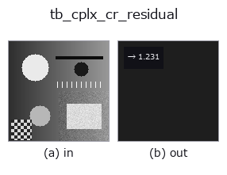

typed op• Datenarten: cimage → feature
• Aufruf: fullseye.apply(img, "tb_cplx_cr_residual", a=0.5, b=0.5) (das 2-D-Modell ist ein Bild plus zwei skalare Regler a,b∈[0,1])

*Die Abbildung ist die tatsächliche Ausgabe auf einer synthetischen 128×128-Eingabe. Links Eingabe, rechts Ausgabe. Punktwolken als Draufsicht-Streudiagramm (Helligkeit = z), 1-D-Reihen als Linie, Volumen als Maximum-Projektion entlang z, Videos als mittleres Bild, komplexe Bilder als Betrag; Rückgabewerte, die kein Bild ergeben, werden als Werte gezeigt.*
*Regler a ändert die Ausgabe nicht (gemessen: identisch bei 0,1 / 0,5 / 0,9).*
*Regler b ändert die Ausgabe nicht (gemessen: identisch bei 0,1 / 0,5 / 0,9).*
Stufen (die vorangehenden Ops → dieser Op, von links nach rechts):
▸ tb_cplx_cr_residual: Stufen (Doku-Website)
Cauchy-Riemann-Residuum eines abgetasteten komplexen Feldes — "Ist dieses Feld holomorph?" als Zahl.
> Die ausführliche Beschreibung unten ist der Originaltext — Zusammenfassung und Überschriften sind übersetzt.
With f = u + i v sampled on a uniform grid, holomorphy means u_x = v_y and u_y = -v_x (Cauchy-Riemann). This returns the relative residual max(|u_x - v_y|, |u_y + v_x|) / max|grad| (central differences, numpy.gradient): 0 = the samples satisfy CR to the discretisation limit, 2 = the field is the conjugate of a holomorphic one (conj(z) gives exactly 2), values in between = partly analytic or noisy.
Grid convention (it decides the sign of the answer): f[i, j] is the field at z = x0 + j*spacing + i*spacing*1j — rows index the *increasing imaginary* axis, columns the real axis. Image arrays usually run rows *downward*; feeding one directly measures the conjugate field, whose residual is 2, not 0. Flip rows (f[::-1]) to use image data.
Discretisation, honestly: central differences are exact for polynomials of degree <= 2, so f = z**2 returns exactly 0; for higher order the residual floors at O(h^2 * |f'''|) (measured: f = z**3 on a [-1,1]^2 grid returns 1.7e-3 at h and 4.2e-4 at h/2 — a factor 4.00, the expected second order). Read a small value as "consistent with holomorphic at this resolution", never as proof.
A constant field returns 0.0 (it is holomorphic; the 0/0 of the normalisation is resolved by that limit, and stated here rather than left to numpy).
Raises ValueError: not a 2-D array, either dimension below 3 (no central difference exists), non-finite/masked input, over-cap size, non-finite or non-positive *spacing*.
HALCON: no operator (derivate_gauss supplies the real-valued derivatives one would build this from).
Typed bridge of the math op cplx_cr_residual into the 2-D evolution registry: the same implementation, called under the op(v, a, b) convention. a drives spacing (default 1); b is unused.
• Katalog der Beispieldaten (Download-URLs / Lizenzen) — 2-D nutzt skimage.data (BSD/Public Domain) plus synthetische Bilder, 3-D nennt Download-URLs echter Datenquellen (Stanford, PDS, …).
• Herkunft und Literatur der Operatoren — die Quellen der Forschung/Verfahren, auf denen diese Operatorfamilie beruht.
Das Programm unten ist nachweislich lauffähig (gleiche Eingabe wie die Abbildung). In der Studio-Hilfe wird dieser Block zu Schaltflächen, die es sofort laden und ausführen.
img_to_cimage 0.50 0.50 tb_cplx_cr_residual 0.50 0.50
▸ Diese Pipeline laden · Laden & ausführen
Die folgenden Beispiele rufen den zugrunde liegenden Ledger-Op cplx_cr_residual auf. Dieser Brücken-Op ist dieselbe Implementierung, angepasst an die Konvention fn(v, a, b); das Verhalten gilt unverändert (nur die Aufrufform unterscheidet sich).
• math_complex — py -3.11 examples/math_complex.py
• poc_complex_plane_fields — py -3.11 examples/poc_complex_plane_fields.py
feature als Eingabe)typed)tb_points_to_voxel · tb_estimate_point_normals · tb_iss_keypoints · tb_project_points · tb_render_point_depth · tb_statistical_outlier_removal · tb_radius_outlier_removal · tb_voxel_grid_downsample
*Provenance: ops.py — 2D Operator-Registry. Diese Notiz wird von tools/opdocs.py md erzeugt (nicht von Hand bearbeiten).*
© 2026 Kazufumi Furuse — Fullseye operator documentation. Licensed under Apache-2.0.